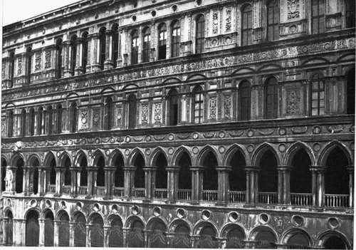
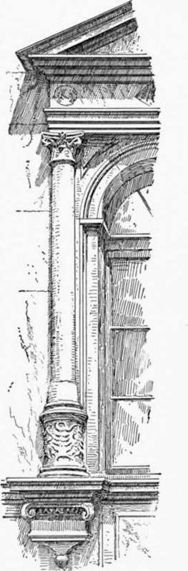

Chapter IX. Palace Architecture Of The Renaissance In North Italy
Description
This section is from the book "Character Of Renaissance Architecture", by Charles Herbert Moore. Also available from Amazon: Character of Renaissance Architecture.
Chapter IX. Palace Architecture Of The Renaissance In North Italy
The palace architecture of the Renaissance in north Italy which has the most marked local character is that of Venice. We have already, in the preceding chapter, noticed several buildings here by Sansovino, but these belong to the later Roman Renaissance style, and are thus not so distinctly Venetian. Several civic monuments, however, and many houses of the Grand Canal and elsewhere, exhibit the peculiar Venetian type. Among the earliest and most noteworthy of these is the east side of the Court of the Ducal Palace by the architect Antonio Riccio of Verona.1 This richly ornamental scheme is wrought upon a foundation of earlier work to which the architect was obliged to conform, and this appears to have given rise to the irregular magnitudes and spacings of the openings of the upper stories, which are so noticeable, and are in marked contrast with the symmetrical regularity of Renaissance design in general. The long facade is in two walled stories above a basement in two stages of open arcading, with the so-called giant's stairway giving access to the upper arcade. The ground story has splayed round arches on piers of corresponding section adorned with pilasters of neo-classic form, while the stage above has a pointed arcade on compound shafted supports of mediaeval Venetian character (Plate VI). The upper stories are marked by entablatures, and the round-arched windows are flanked by pilasters reaching, in the principal story, to the arch impost, and then stilted to carry curved pediments worked in relief against the entablature that crowns this story. The top story is divided into two parts of nearly equal length, but of different height, and different design. The part extending from the middle to the sea side of the court is the lower, and has its windows flanked by pilasters reaching to the crowning entablature. These pilasters are raised on pedestals forming ressauts to a podium, and some of the windows are grouped in pairs, some in double pairs, and some are single. In the taller part the windows are taller, and show considerable differences of design. One group, consisting of a double pair, has flanking pilasters reaching only to the impost, with a stilt-block rising from the capital of each to the crowning entablature, while Corinthian colonnettes, with strongly marked entasis, support the archivolts — both pilasters and shafts being raised on low pedestals. Separated from this by a considerable interval is another window group of the same design, but consisting of a single pair, while in the intervening space, and along the rest of the wall toward the church of St. Mark, are unequally spaced single windows with pilasters supporting the archivolts, and other pilasters flanking these, all raised on high pedestals connected by a continuous podium. In the upper stage of the basement, at the head of the giant's stair, the pointed arcade is interrupted by a group of three round arches on grouped pilasters. The wall surfaces are everywhere elaborately panelled and enriched with arabesques, and the friezes, spandrels, and podiums have panelled disks, festoons, and arabesque ornaments in tiresome profusion.
1 Cf. Architettura Italiana, by Alfredo Melani, Milan, 1887, vol. 2, p. 157.
Plate VI
Facade Of Court, Ducal Palace Venice
The north side is also in the Renaissance style, but here is only one enclosed story, and this is on the level of the upper arcade of the east side. The architectural scheme of this part is different, except that its entablature is a continuation of the lower one of the eastern fagade. The work here appears to have been wholly new, and the regularly spaced windows are each framed with a pseudo-Corinthian order in high relief, the shafts of this order being raised on ornamented round pedestals resting on corbel-blocks (Fig. 90). The walls are incrusted with large slabs of veined marble, and an ornamental disk in relief is set in each interspace.
Fig. 90.
The finest thing in this court is the giant's stair. Few architectural works of the Renaissance are so reasonable and so free from superfluous and unmeaning features. The steps, broken about midway by a landing stage, are enclosed by balustrades of severely simple design starting from square newels; and the sides are plainly panelled in marble, with delicate mouldings and arabesque carvings on the surfaces of the framing members. The mechanical execution of the whole is superb, no settlement or fracture appearing in any part.
Continue to:
- prev: Church Architecture Of The Renaissance In North Italy. Part 5
- Table of Contents
- next: Palace Architecture Of The Renaissance In North Italy. Part 2